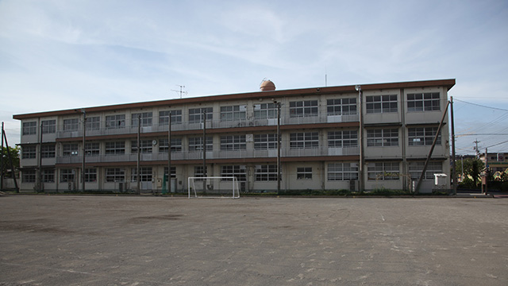

長年、塾講師・塾経営者をやっていると親の皆さんから良く聞かれるのは「どんな学校がオススメですか？」「良い学校はどこですか？」というものです。
受験校を決めるのは子どもだけでなく、親も大いに頭を悩ませるところですね。お気持ちはよく理解できます。
果てしてどこの学校に我が子を進ませるのがよいのか。
我が子に合う学校はどこなのか。
どんな学校が「良い学校なのか」
親も子も悩むところです。
行く学校によっては人生を左右しかねない。
もし変な学校に行ってしまったら、将来困ることになりはしないか。
そんな心配がよぎるのでしょう。
そして、実際のところその学校がどんな教育をやっているのか。どんな先生がいて何に力を入れているのか、どんな設備特徴があるのかその肝心な情報は意外に知られていないものです。
一部の学校を除いて、高校なり大学なりの具体的な実態というものはなかなか伝わってこないものです。
知り合いが通っていたとか、近隣から漏れ伝わってくるウワサなどの断片的情報はあっても、本当のところはよく分からない。
私たち塾関係者も学校の情報は、生徒や親へ伝えていますが、それは大学合格者数だとか受験科や交通手段など数字で表されるものが大部分になります。
結局いまひとつイメージがわかない。
だから「ズバリ良い学校、オススメはどこですか？」という問いになるわけです。
その結果、よく分からないからとりあえず「偏差値の高い」学校が無難ということになるわけです。
さて、ここで考えなければならない大切なことがあります。
学校選びの基準については考えるとき、まず多くの方が「やってはいけないこと」をやってしまっています。
それは言葉の問題です。
多くの人は、意識的にせよ無意識的にせよ何かを選ぶ際「良い」「悪い」という二項対立的コトバで判断しているということです。
多くの人はいとも簡単に「良い学校」とか「良い会社」という言葉を使います。
「良い」という言葉を使うからには、その反対の「悪い」が存在することが当然の前提となります。
「あの学校はいい学校」と言うとき、その裏には「悪い学校」があると想定していることになります。
そして一般的に─あくまで一般論ですが─偏差値の高い学校、難関校が「いい学校」で低い学校は「あまり良くない（悪い）学校」というイメージが出来上がります。
この無意識の判定─あそこは良い学校だ。こっちは良くないという価値判断─をストップすることがまず先決です。
有意義な学校生活は自分次第
当たり前ですが、学校に良い悪いはありません。自分にとって良かったとか、あまり良くなかったという感想があるだけで、学校それ自体に善悪があるわけではないからです。
まして、偏差値の高い低いなど全く関係ありません。
あくまで、通っている生徒自身が学校生活を送る中で「意義ある体験」といえるものを数多く持てたかどうか。本人規準でしか判定出来ないものでしかない。
そして「意義ある体験」が持てるかどうかは、学校の提供するサービスではなく、本人の資質や考え方にこそかかっている、というのが私が長年見てきたことから言える結論です。
先生を例にとるとどんな学校にも、いわゆる「相性の合う先生」はいます。逆にどんな学校にも「相性の良くない先生」はいます。
例えば、自分のことをよく理解してくれて長所を引き立てるよう指導してくれる人が良い先生だとするなら、そういう先生はどんな学校に行っても必ずいるものです。
でも、そのような「良い出会い」をうまく作ることも生徒自らの資質や努力によるところが大きいと感じます。
その生徒自身が何事にも熱心に取り組むとか性格的にオープンで他者に心を開いているとか、素直であるとかは「良い出会い」にとって大切な要素です。
要するに、学校に良し悪しはないが本人次第で自分の通う学校を、良くも悪くもすることができるということです。
それなら行くと決まった学校を、良い学校としてしまえばいいのです。
つまり物事の良し悪しを、他人や環境のせいにするのではなく、自分基準で「良いところ」に変えてしまうことです。
一番ダメなのは、学校の難易度のレベル（偏差値）だけを基準に志望校を決めてしまうこと。さらには有名か無名かなどの「見栄えの良さ」で決めてしまうことで、たとえ合格したとしても「思っていたイメージ」と違っていたと不満が出たり、第二志望以下になった場合は「ここは元々行きたくなかった学校」だからと学校のせいにしてヤル気を失ったりします。
従って親が子どもに、どんな学校に行くにせよ「学校によって人生は決まらない。自分自身がその環境の中でどれだけベストを尽くしたかが重要である」と明確に伝えることが大切です。
これがまず基本中の基本であると思います。
与えられた環境でベストを尽くす
自分の行く学校こそが最善
そのように考えれば「行ってからこんなハズではなかった」という失敗もないでしょう。
その上で、学校の教育方針や設備、やりたい部活の有無そして校風などを総合的に考えた上で「行きたい」と思う学校を選んでください。
私立だからめんどう見が良いだろう。
公立だから先生が不熱心に違いない。
偏差値が高いから優秀な教師が多いのだろう。
大学進学率が良いからウチの子も大丈夫だろう。
これらは全く根拠のない偏見に過ぎません。
表面的で外側から見た浅薄な価値観であり思い込みです。
少なくとも「有意義な体験」を保証するものではない。
今年も入試シーズンがやってきました。
合否そのものに一喜一憂せず、どこへ行こうと自分の未来は自分で切りひらくという精神力の強さこそを子どもに伝えたいものです。